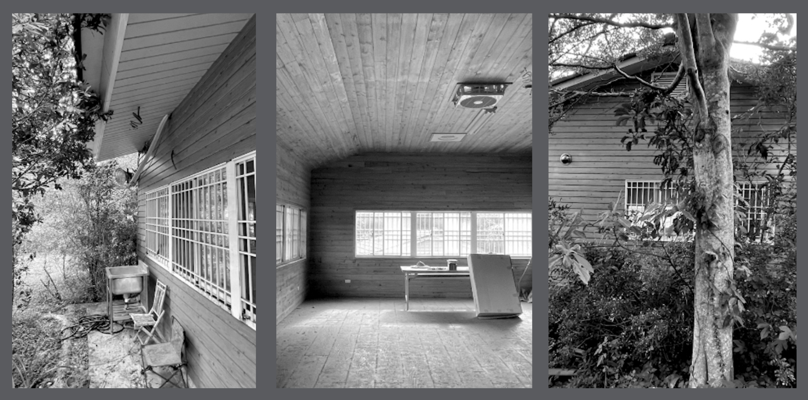

✱ Ongoing construction ✱
Commissioned by clothing brand 4dimension to renovate a 70㎡ wooden house on Hsinchu. The cabin will be a campsite and a base for VIP members. Mountains surround the place, and the scenery is delightful, so the windows facing the mountainside are changed to French windows. Considering it is necessary to cook frequently on the mountain, an extended island and kitchen equipment are set up. Most materials use moisture-resistant plywood, and the natural texture echoes the environment in the mountains. The minimalist renovation and merchandising create a relaxing atmosphere.